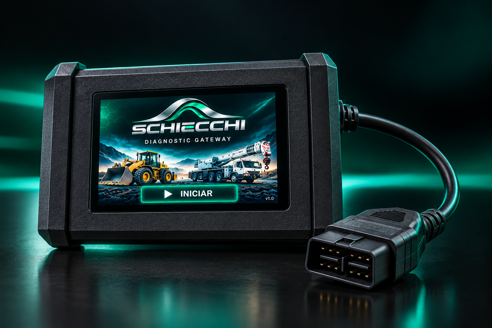
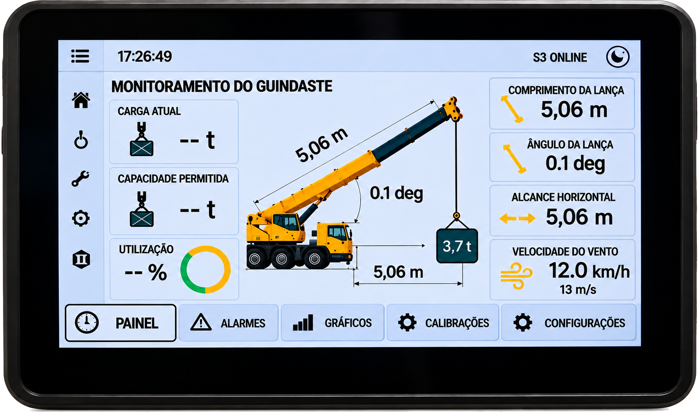

SOFTWARE
Soluções para máquinas e equipamentos.
SOLUÇÕES EM TECNOLOGIA PARA MÁQUINAS E EQUIPAMENTOS
Simplificar. Diagnosticar. Agilizar.
CONHEÇA A SCHIECCHIA SCHIECCHI
A SCHIECCHI desenvolve tecnologias para conectar máquinas, dados e pessoas.
Criamos soluções que unem software, conectividade, eletrônica, automação e inteligência artificial para tornar a tecnologia uma aliada diante dos desafios do dia a dia.
Nosso propósito é colocar a tecnologia a serviço de quem está na operação, tornando processos mais simples, diagnósticos mais ágeis e decisões mais fáceis.
Soluções para máquinas e equipamentos.
IoT, comunicação e monitoramento.
Sistemas embarcados e desenvolvimento.
Controle e integração de sistemas.
Análise de dados e eficiência operacional.
TECNOLOGIA QUE TRABALHA COM VOCÊ.

SOBRE NÓS
Especialista técnico e desenvolvedor de soluções SCHIECCHI
A experiência prática com máquinas e sistemas eletrônicos permite compreender o problema onde ele realmente acontece: no campo.
Esse conhecimento é aplicado no desenvolvimento das tecnologias SCHIECCHI, conectando diagnóstico, eletrônica, software e automação para transformar necessidades reais de operação em soluções práticas.
NOSSAS TECNOLOGIAS

DIAGNÓSTICO SEM FRONTEIRAS.
Conectividade para acesso remoto aos sistemas eletrônicos da máquina, permitindo que a equipe SCHIECCHI utilize seus recursos de diagnóstico e análise sem a necessidade de estar fisicamente junto ao equipamento.
CONHEÇA O GATEWAY
INFORMAÇÃO E CONTROLE EM TEMPO REAL.
Sistema desenvolvido para reunir os principais parâmetros da operação em uma única interface, com monitoramento em tempo real em display touch de 10,1".
CONHEÇA O SISTEMA
TECNOLOGIA PARA ACOMPANHAR E CONTROLAR A OPERAÇÃO.
Soluções SCHIECCHI para monitoramento, conectividade e controle de colhedoras de café, com opções PLUS e ESSENCIAL para diferentes necessidades da operação.
CONHEÇA AS SOLUÇÕESTEM UM DESAFIO?
Máquina, equipamento ou operação. Conte brevemente o que você precisa e nossa equipe entrará em contato para entender o seu caso.
ATENDIMENTO SCHIECCHI
Diretora Executiva
Relacionamento comercial e atendimento SCHIECCHI.
FALAR COM A SCHIECCHI